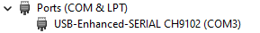
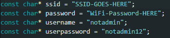

ESP32 Web Server with Arduino IDE
On this project we are going to create a Web Server using an ESP32!
First i would like to explain what's an ESP32 and how does it work,
¿What is an ESP32?
The ESP32 is a microcontroller developed by Espressif Systems that combines powerful processing capabilities with integrated Wi-Fi and Bluetooth features. It's commonly used in Internet of Things (IoT) projects due to its ability to connect devices to wireless networks.
ESP32 How it works:
- Programming: The ESP32 is typically programmed using the Arduino IDE or Espressif's own ESP-IDF.
- Connectivity: It can connect to Wi-Fi networks and communicate with other Bluetooth devices, enabling remote control and data transfer.
- I/O Ports: It has numerous input/output ports for connecting sensors, actuators, and other peripherals.
In my case im using a TTGO-LoRa32 OLED, this board combines the ESP32 microcontroller with LoRa (Long Range) communication capabilities. So in short terms its kinda the same but with this board we can also use the LoRa technology.
ESP32 vs TTGO LoRa32
| Feature | ESP32 | TTGO LoRa32 |
|---|---|---|
| Microcontroller | ESP32 | ESP32 |
| Wi-Fi | Yes | Yes |
| Bluetooth | Yes | Yes |
| LoRa Communication | No | Yes |
| OLED Display | No | Some versions include an OLED display |
| Power Management | Basic (depends on the board) | Advanced (battery support, charging) |
| Applications | General IoT, home automation | Long-range IoT, remote sensing |
Requirements Needed:
- Arduino IDE Software
- ESP32 Microcontroller
Necessary libraries:
- #include Wire: Used for interfacing with various sensors and peripherals that communicate via the I2C protocol.
- (OPTIONAL) #include Adafruit_GFX: Used for rendering shapes, text, and images on displays. It serves as a foundation for other display libraries.
- (OPTIONAL) #include Adafruit_SSD1306: Used for displaying text, graphics, and images on small OLED screens, often in combination with the Adafruit GFX library.
- #include WiFi: Used for establishing Wi-Fi connections, handling network settings, and facilitating communication over Wi-Fi.
- #include ESPAsyncWebServer: Used for creating responsive and non-blocking web server applications on the ESP32, enabling dynamic web content and handling HTTP requests.
- #include SPIFFS: Used for reading and writing files to the ESP32 flash memory, enabling storage and retrieval of data like configuration files, web pages, and other resources.
To begin with the creation of the web server, the first thing we need to do is Launch Arduino IDE software, and connect our device to a computer or a power source.
Once our device is powered on, a green light should turn ON, just like in the next image:
Next thing we will do is know on which PORT our device has connected on our computer, to do this we will enter into the "Device Manager" of our computer, then on the "Ports (COM & LPT)" Section we
will see our device connected into a COM Port just like in the next image:

Now since we know on which port is connected the device in our case is 'COM3', we will open Arduino IDE and connect the device into the Software, to do this we will click on the upper right section that says "Select board and port ...",
now we will select our device and the port that is connected to:
1. Creating the libraries and declaring required variables:
Once we have connected our device into the Arduino IDE Software, we can start the coding process, to begin with, the first thing that we are going to do is declare our libraries:
- Wire.h Essential library for the interaction with screens and another devices.
- Adafruit_GFX.h This library provides functions to draw objects, text and images in digital screens.
- Adafruit_SSD1306.h This library allows to show text, objects and images on those OLED screens.
- WiFi.h Essential library to have WiFi access with our device.
- ESPAsyncWebServer.h This library allows to create a web server with our device.
- SPIFFS.h With this library we can allow our device to store data in the flash memory.
Just like in the next image:
In my case my device has a display, so im gonna define the dimensions of the OLED display:
Next we are gonna create an object to define and control the oled display:
Now we are going to create an object (server), listeniung on port 80 (HTTP).
Before we start coding we will need four variables to storage specific data for our device to have WiFi access and authenticate users.

- ssid Here we will store the SSID of the WiFi that we want to connect to.
- password Here we will store the password of the WiFi aforesaid above.
- username Here we will store the "username" for the required authentication
- userpassword And finally, here we will store the "password" for the authentication along with the username.
2. Initial Configuration setup():
Now we will start with the function "setup()", this function will only be executed only once when the device is powered on.
Wire.begin() Initializes the I2C (Inter-Integrated Circuit) communitacion protocol.
display.begin() This configures the OLED Display establishing it's parameters for the proper funcionality.
SPIFFS.begin(true) Initializes the SPIFFS file system it allows the esp32 to store data on its flash memory.
WiFi.begin() The device will try to connect to the WiFi network using the two variables that we declared a few steps back, the "while" loop will wait till it connects to the network.
server.on() Here we are defining what the server has to do when someone visints certain addresses of our web server:
- The adress "/" is the main page.
- The Adress "/test" it could be the second page.
In both pages it requires authentification for more security.
Here's how the code should look:

And this is how it should look when we access the website:
server.begin() Initialices the web server.
3. Main Loop "loop()":
This loop is repiting itself after "setup()" this loop was created to display text on the OLED Display:
display.clearDispplay() With this we clear the display.
display.setCursor(0, 0) Here we are "telling" the display to start showing text on the position "0, 0".
display.print() With the print function we are printing text to the display.
display.display() With this line we are refreshing the display to show the changes for every iteration in the loop.
4. Authentification of the Web Server:
This part of the code is ensuring that only the people with the correct credentials can access the web site.
request->authenticate() This is verifying if the user has proportioned the correct user and password.
If the authentification fails, the server will emit a request for the browser to display a login dialog box.
This is how it should look:
This was all! I hope you liked my script! you can get the code here: Code here